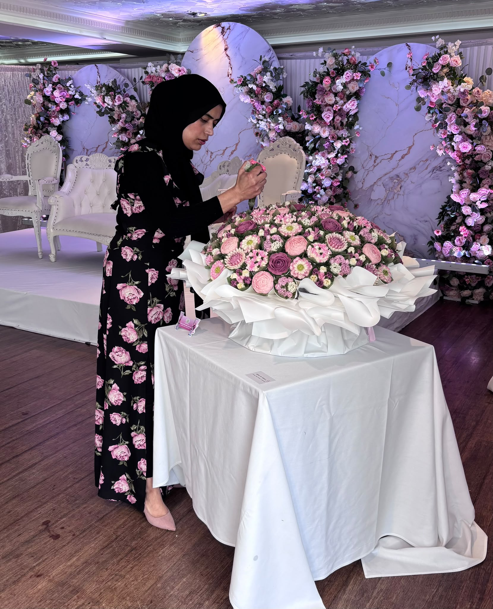

A love of flowers.
A little buttercream magic.
Meet the hands and heart behind Baked By Adeela.

Hello, I’m Adeela.
Welcome to Baked By Adeela. I create floral cupcake bouquets, wedding and celebration cakes in Birmingham, inspired by the colours and delicate details of flowers.
Hand-piped buttercream flowers are at the heart of my work. From soft pink roses and lilac petals to a fuller, statement bouquet, each design brings together the beauty of a floral arrangement and the joy of sharing cake.
I love how personal a cake can be. A favourite colour, a flower that means something, a thoughtful gift for someone special — these little details are where your design begins.
If you’re celebrating in Birmingham or the Midlands, tell me about your occasion. Together we can explore the colours, flavours and finishing touches that make it yours.
Flowers you can admire.
Cake you can share.
Explore hand-piped floral cupcakes, meaningful gifts and beautiful celebration centrepieces.
Explore cupcake bouquetsA little more flower magic.
Explore the studio on Instagram, from buttercream details to finished celebrations.


From the Baked By Adeela portfolio. See the latest posts on Instagram.